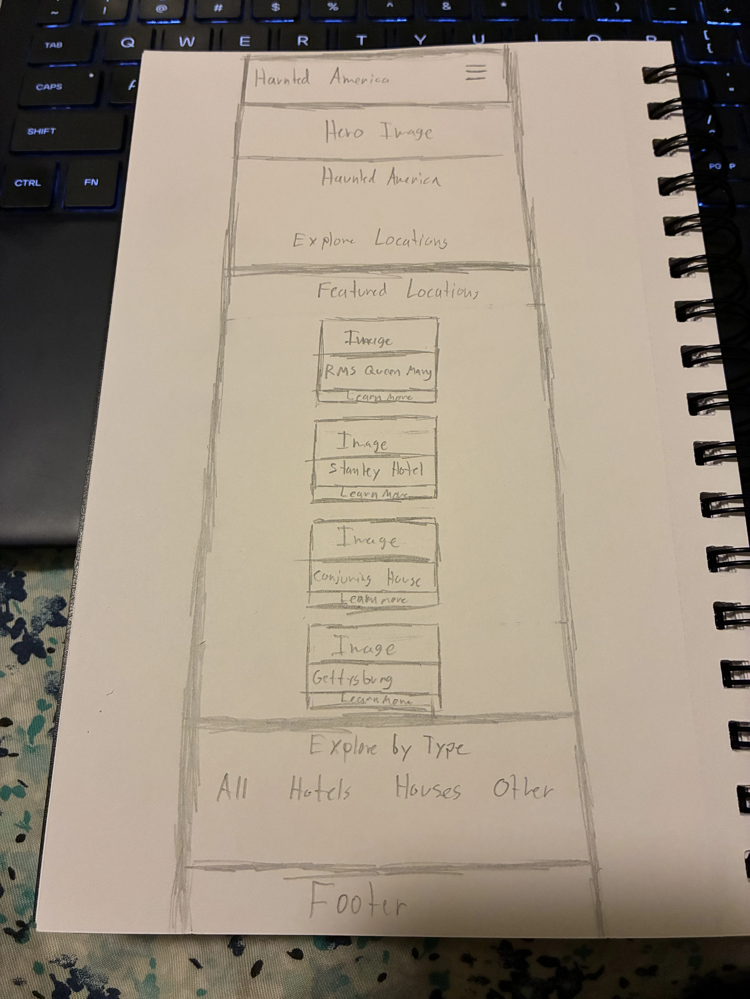
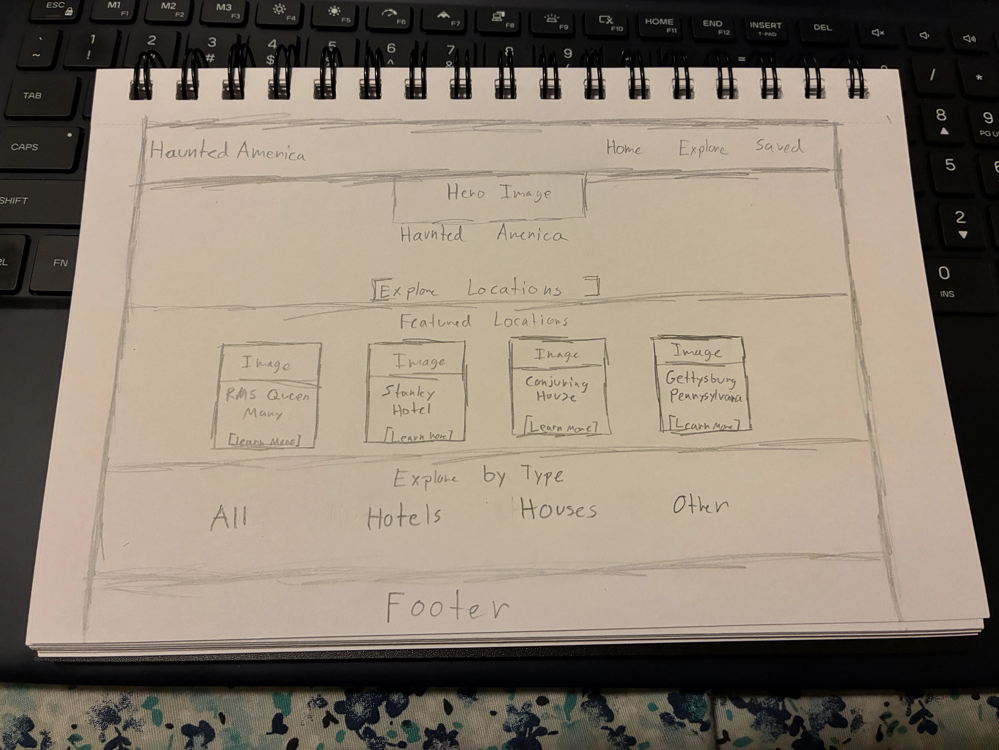

Site Name
Haunted America
The name Haunted America represents a website focused on reportedly haunted locations throughout the United States. I chose this subject because paranormal stories and haunted locations fascinate me. The website will also help me create a list of places I might want to visit someday while helping other people discover interesting and spooky places to visit.
Site Purpose
The purpose of Haunted America is to provide information about reportedly haunted locations throughout the United States. Visitors will be able to explore historic houses, hotels, prisons, battlefields, caves, and other landmarks.
Each location will provide information about its history, location, type, and reported paranormal activity. Visitors will also be able to explore and filter locations, view additional details, and save locations they may want to visit in the future.
Scenarios
- What reportedly haunted locations can I visit throughout the United States?
- What is the history and reported paranormal activity associated with each location?
- How can I save haunted locations that I would like to visit someday?
Color Scheme
Dark Charcoal - #1B1B1E
Dark charcoal will be used for the main page background, navigation, footer, and other dark sections.
Deep Red - #7A1F2B
Deep red will be used for headings, buttons, links, borders, and accent elements.
Off-White - #F2EFE9
Off-white will be used for paragraph text and other content displayed against dark backgrounds.
Typography
Cinzel
Cinzel will be used for the site name and major headings. The historical style of the font fits the paranormal theme of the website.
Roboto
Roboto will be used for paragraphs, navigation, buttons, location information, and other body content because it is simple and easy to read.
Wireframes
Mobile View

Desktop View
